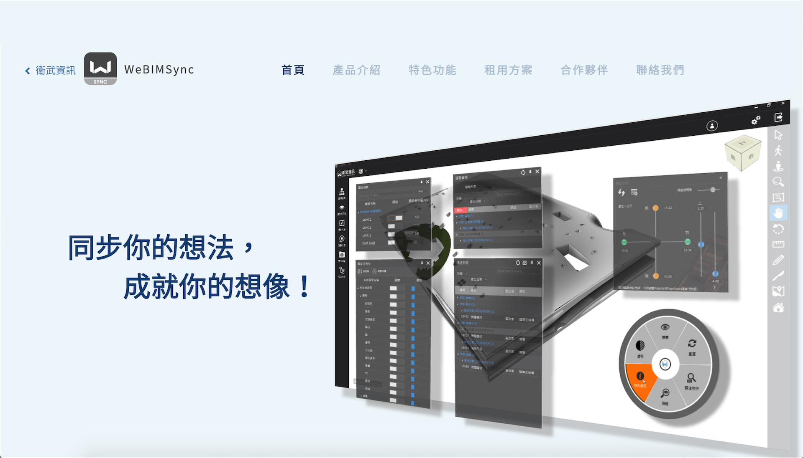
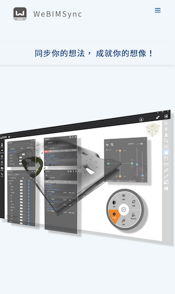
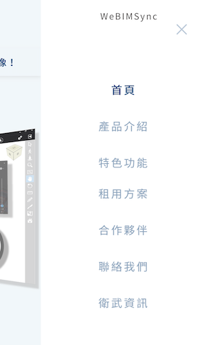
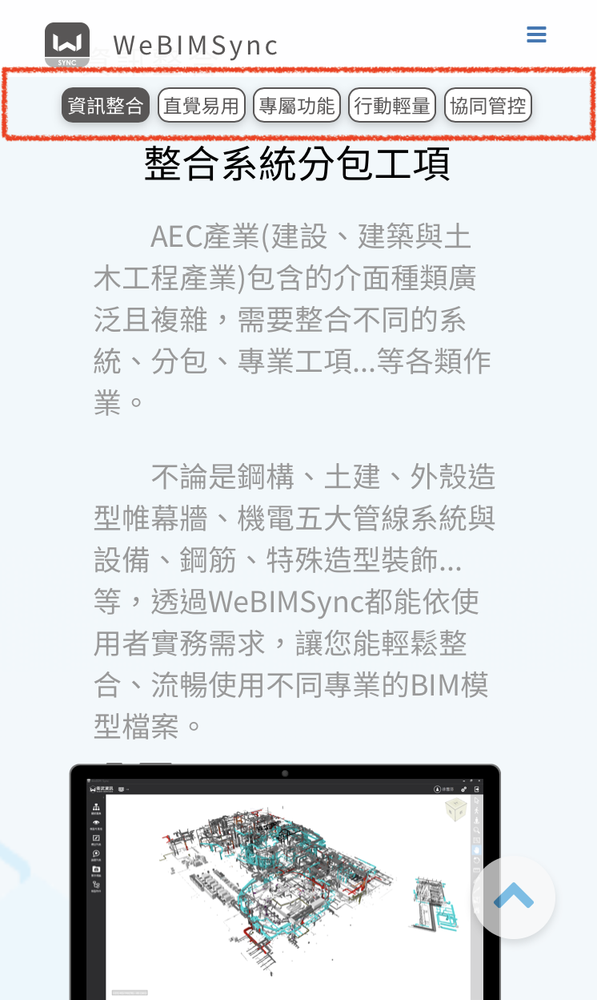
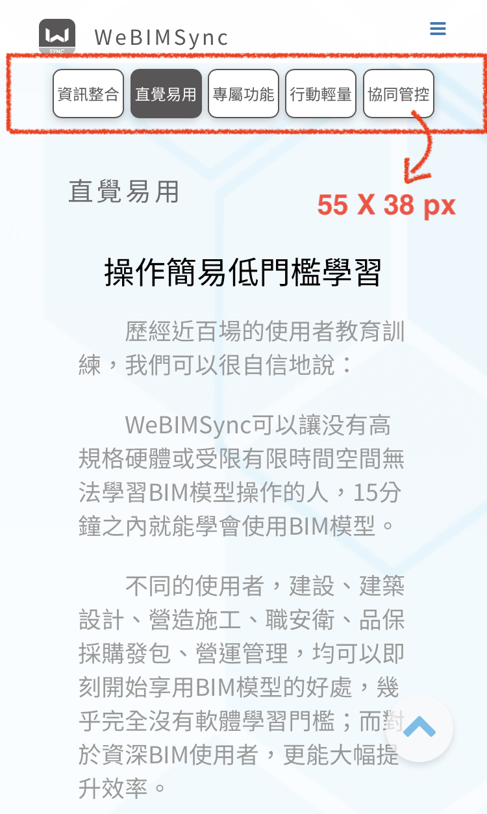
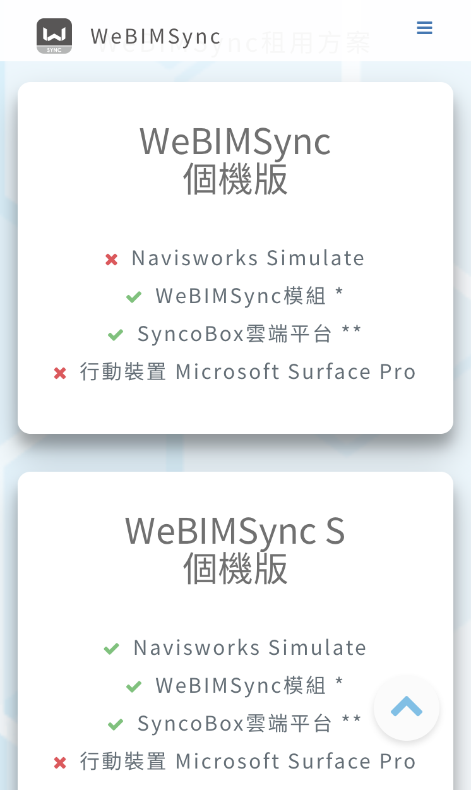

Description
2020年
WeBIMSync 是一套衛武資訊開發並導入在專案應用、授權專案客戶使用的營建專案管理軟體，儘管此產品在專案上的使用已行之有年， 歷經無數次改版與功能優化，醞釀了七年之久，直到2020年，公司決定將此產品正式投入市場，因此需要製作官方網站以利行銷。
負責項目
元件設計
互動元件(Video、Slider)設計
專案協調
RWD設計與實作
網頁建置與維護
設計與成果
Header Navigator

以Tab元件呈現豐富的功能介紹

行動裝置畫面
為了確保使用者能夠瀏覽完整的功能介紹，同時，避免過於豐富的內容造成使用者的迷航， 我在RWD的手機尺寸設計上，新增了讓可以使用者可以隨時自由選擇瀏覽項目，並身兼導航功能的導覽列(下圖紅色框線)。
此導覽列的按鈕尺寸參考 HID iOS中對於可觸控互動元件的最小尺寸建議 。但由於我們的按鈕寬度較寬，因此挪出部分的建議高度，讓閱讀文本的視線更寬廣。





Adobe XD畫面

後記
挑戰
一頁式(One-page)網頁的爆量內容
公司高層希望能將產品豐富的特點及功能，以一頁式網頁的方式呈現給觀者。 一頁式的網頁內容並不適合放入太過大量的資訊，無論是在PC 或是Mobile 裝置上，都在在考驗網頁設計的方式。
因此，我負責協調將文案的內容進行分類，在PC 中以區塊(section)以及頁籤(tabs)包裹該分類的各項內容，避免因為一頁式的網頁過度冗長，而造成觀者的不耐或迷航。
而在Mobile 裝置上，因為可呈現空間大小更為嚴苛，因此將PC 的區塊(section)，以具有導覽功能的頁籤(Tabs) 顯示在頁面上方，方便觀者辨識目前閱讀的內容位置，並隨時切換到欲觀看的段落。
成長
專案協作與協調能力
一個產品的網頁從無到有，由決策者、文案作者、設計師與工程師等人合力完成，以工程師的角色作為專案主導者的我，除了事前與UI 設計師以Adobe XD製作Wireframe， 與決策者取得共識之後，更需要注意人力配置以及各個階段的成果產出時限與品質。最後，我們成功在一個月的時間內，將此網站完成。
為各種發想提供對專案開發有益的建議
此專案牽涉到不同部門的合作，因此容易收到來自於決策者或是其他部門主管，對於網頁呈現的建議。許多建議有可能需要延長網頁建置的時程，例如為了清楚闡述產品內容而產生的大量文案內容， 一開始導致了一頁式的網頁不利於閱讀，這一部分就必須及時的向該負責人提供建議。
需要更充分的事前的評估與準備
當時以JavaScript進行開發，但誤判了在Mobile 裝置上對滑鼠事件的支援，導致原本的呈現方式需要進行修改。可見在專案的事前準備部分，仍有值得改進之處。